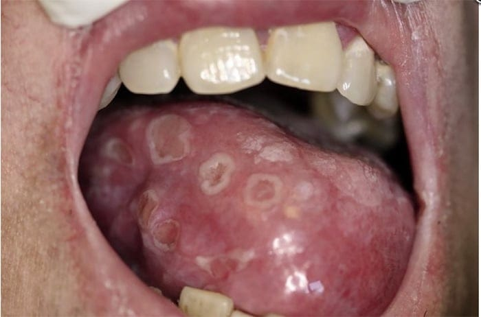

A sífilis é uma infecção sexualmente transmissível (IST) causada pela bactéria Treponema pallidum. É uma doença curável que pode apresentar diferentes estágios (primária, secundária, latente e terciária). Quando não tratada, pode causar complicações graves em diversos órgãos do corpo.
A principal forma de transmissão é a relação sexual (anal, vaginal ou oral) sem preservativo com uma pessoa infectada. A sífilis também pode ser transmitida da gestante para o bebê durante a gravidez ou no momento do parto, causando a sífilis congênita.
O uso de preservativos durante as relações sexuais reduz significativamente o risco de transmissão da sífilis. Além disso, realizar testes regularmente, especialmente para pessoas sexualmente ativas e gestantes, e tratar corretamente a pessoa infectada e seus parceiros ajudam a interromper a transmissão.
O tratamento da sífilis é feito principalmente com penicilina benzatina, aplicada por via intramuscular. A quantidade de doses depende do estágio da doença. É importante que os parceiros sexuais também sejam testados e tratados para evitar a reinfecção. Quando tratada precocemente, a sífilis tem cura.
